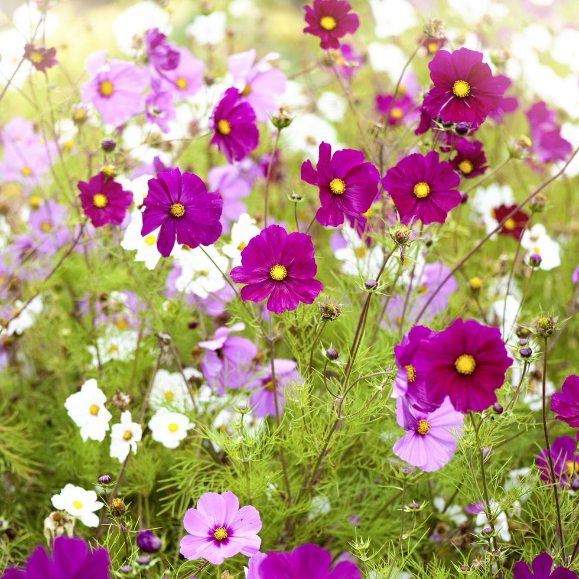
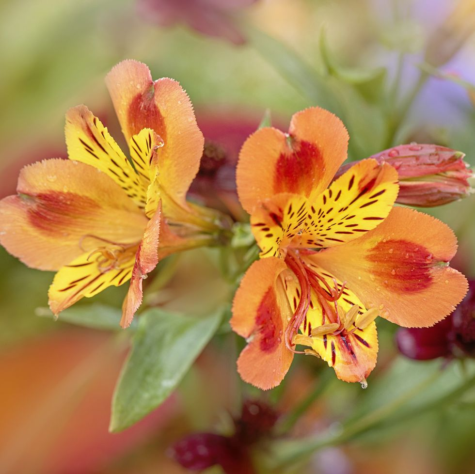

gallery of artwork
 |
 |
 |
 |
| 1.Bougainvillea |
2.Wisteria |
3.Cosmos |
4.Gardenia |
| A favorite in tropical locales, this colorful climber can also be grown annually if you don't
happen to live in a sunny spot. Bougainvillea can grow 20–30 feet tall and wide, and its beautiful
color-saturated flowers make a major impact.
|
If there was ever a flower to make you feel like you've wandered into a Jane Austen novel, wisteria
is it. Not only does this climbing vine look romantic, it smells amazing too and will fill the space
with color and fragrance. Be sure to opt for a North American species if you live in the states.
|
Wispy and delicate, these daisy-shaped flowers seem almost weightless stop their super-long stems
(which can grow up to 60 inches tall! Stake them for added support). Wedding florists love to tuck
them into otherwise staid bouquets for a bit of happy whimsy; you should do the same for tabletop
arrangements. |
Known for its rich scent, this waxy flower with glossy thick leaves is often used in perfumes.
An evergreen shrub that can grow 8 feet tall, gardenias grow best in humid areas. |
|  |
 |
 |
 |
| 5.Alstroemerias |
6.Rose |
7.Petunia |
8.Marigold |
| Typically called Peruvian lilies, they come in bright colors like pink, orange, and purple.
Alstroemerias easy to grow and don't require a ton of care. Great for flower bouquets, they
last up to two weeks once cut. |
With hundreds of species, roses bloom in a myriad of beautiful colors. These romantic flowers
aren't just for Valentine's Day—they'll look gorgeous in your garden. Plant them where they'll
get enough morning sun, and make sure to water them diligently. |
These trumpet-shaped flowers are popular to plant in flowerbeds. They come in a variety of
colors, and they're easy to grow. |
Part of the sunflower family, these bright, beautiful flowers bloom all summer long.
They thrive in lots of sunshine and can even endure hot summers.
|